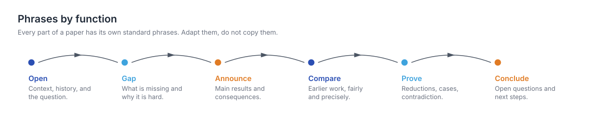

Guides · Writing
The academic phrasebook
Reusable English phrases for every part of a research paper, sorted by function. Announcing results, defining, comparing with earlier work, structuring proofs, hedging, and concluding.

Path · Writing your first paper · step 7 of 7

This phrasebook collects neutral, standard phrases used in research papers. They are building blocks, not templates to copy mechanically. Use them to get started, then adapt them to your own voice. The bracketed parts are placeholders.
Opening the paper#
- [Object] plays a central role in [area].
- The study of [object] goes back to [author], who showed that [result].
- A basic question in [area] is whether [question].
- Over the last decade, [object] has attracted considerable attention because [reason].
- Despite this progress, little is known about [gap].
Stating the problem and the gap#
- The main difficulty is that [obstacle].
- Existing methods do not apply when [condition].
- To our knowledge, the case [case] has not been treated.
- This leaves open the question of whether [question].
- The purpose of this paper is to [aim].
Announcing results#
- Our main result is the following.
- We prove that [statement].
- We show that [statement] holds under the weaker assumption [assumption].
- As a consequence, we obtain [corollary].
- In particular, this answers a question of [author].
- This extends a result of [author] from [setting A] to [setting B].
Explaining the method#
- The proof relies on [technique].
- The key idea is to [idea].
- We proceed in three steps. First, [step one]. Then, [step two]. Finally, [step three].
- Our approach differs from [earlier approach] in that [difference].
- The main new ingredient is [ingredient].
Organizing the paper#
- The paper is organized as follows.
- Section 2 recalls the necessary background on [topic].
- In Section 3 we prove [result].
- Section 4 contains examples and applications.
- We conclude with open questions in Section 5.
Definitions and notation#
- Throughout the paper, [convention].
- We say that [object] is [property] if [condition].
- Recall that [definition].
- We write [notation] for [meaning].
- Unless stated otherwise, all [objects] are assumed to be [property].
Comparing with earlier work#
- This result was first proved by [author] in [setting].
- A similar statement appears in [reference], under the additional assumption that [assumption].
- Our proof is closer in spirit to [reference].
- In contrast with [reference], we do not assume [assumption].
- The case [case] was treated independently by [author].
Inside a proof#
- Suppose, to the contrary, that [assumption].
- It suffices to show that [claim].
- By [lemma], we may assume that [reduction].
- We first treat the case [case], and then deduce the general case.
- This contradicts [fact], and the proof is complete.
- The converse follows by the same argument.
- Without loss of generality, we may assume that [condition].
Examples and remarks#
- The following example shows that the assumption [assumption] cannot be dropped.
- Note that [observation].
- In general, [statement] fails, as the following example shows.
- The condition [condition] is satisfied, for instance, when [case].
Hedging and precision#
- We expect that [statement] holds in general, but we have not been able to prove it.
- It seems likely that [statement].
- This suggests that [statement].
- At present, we do not know whether [question].
- Numerical evidence indicates that [observation].
Concluding and open questions#
- It would be interesting to know whether [question].
- A natural next step is to [direction].
- We hope to return to this question in future work.
- We do not know whether the bound [bound] is sharp.
Acknowledgements#
- The author thanks [name] for helpful discussions.
- We are grateful to the referee for careful reading and valuable comments.
- This work was supported by [funder] under grant [number].
Phrases to avoid#
- Unsupported claims. Writing "it is well known that" without a reference. Give the reference instead.
- False ease. Writing "obviously" or "clearly" when the step is not obvious to a reader. Explain the step or cite it.
- Inflated adjectives. Writing "very unique" or "very novel". These adjectives do not take degrees.
- Future tense for the paper. Writing "in this paper we will prove". Prefer "we prove".
- Indirect thanks. Writing "the author would like to thank". Prefer "the author thanks".
Checklist#
- I use phrases as starting points and adapt them.
- Every "well known" fact has a reference.
- My comparisons with earlier work are precise and fair.
- My hedging matches the strength of my evidence.
Discussion
Questions, corrections and your own experience are welcome. Comments live in the forum, on GitHub Discussions, with Markdown and LaTeX.